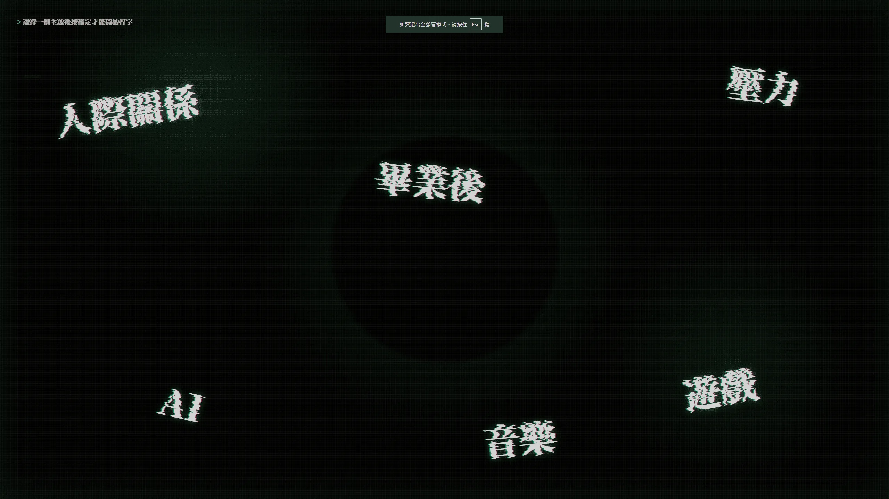
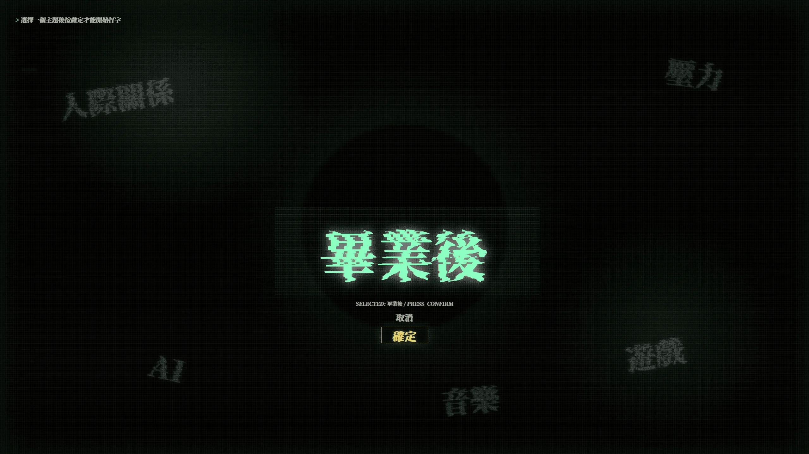
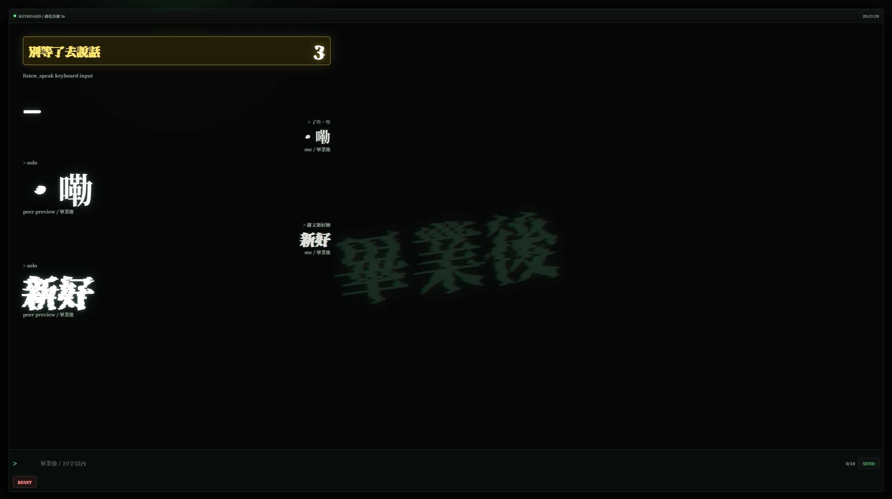
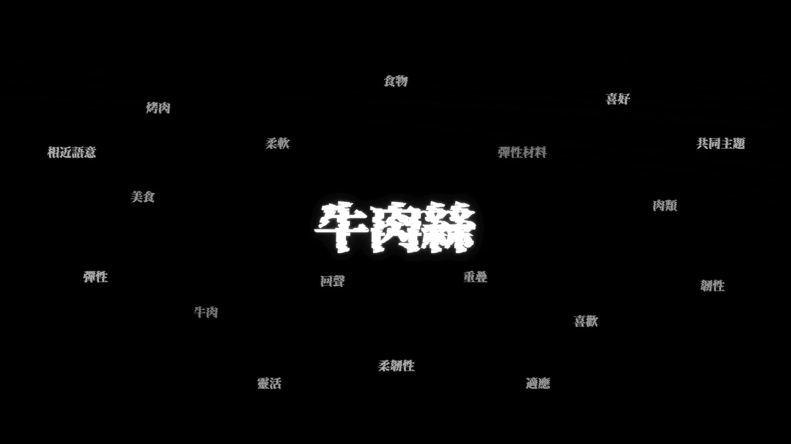
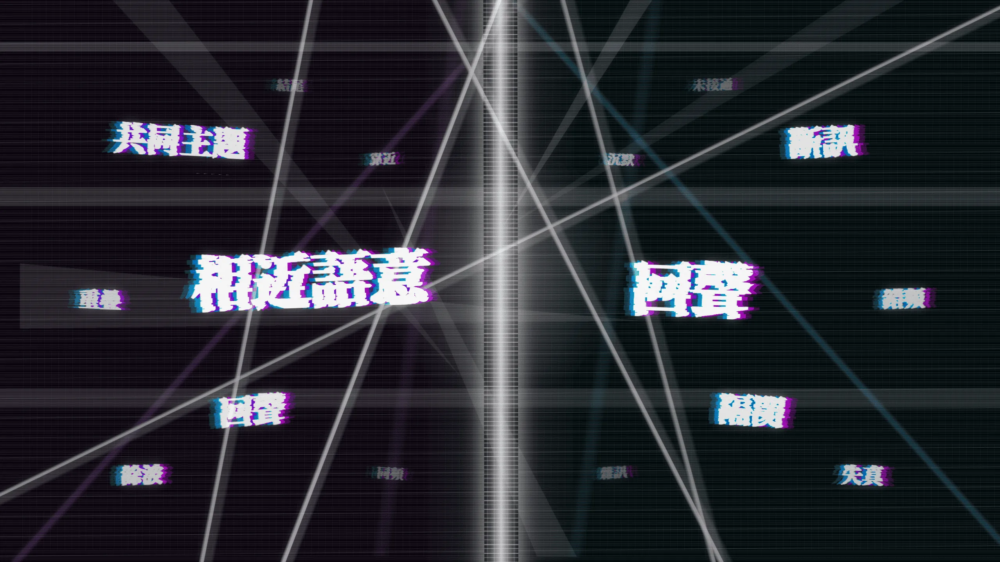
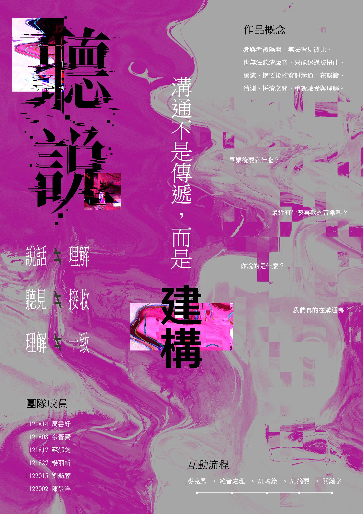
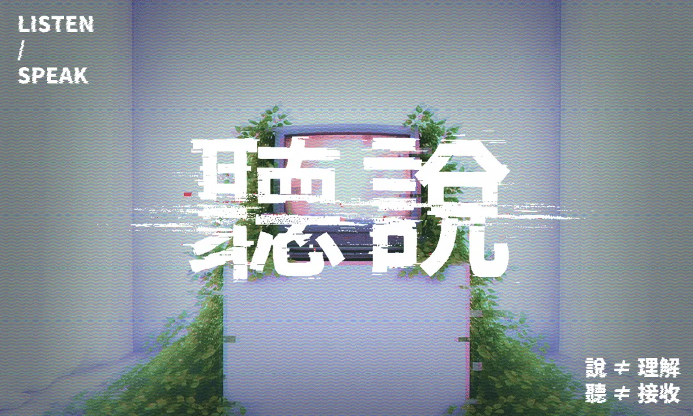

思考主題
雙方選擇想討論的生活經驗、興趣或日常話題。
一件以資訊失真、語音辨識與雙人對話構成的互動裝置。參與者在看不見彼此的狀態下，透過被扭曲的聲音與不完整文字，重新經歷理解如何在猜測、誤讀與修正之間慢慢形成。
資訊在人與人之間流動時，很少能百分之百完整地抵達。記憶、經驗與立場會介入接收過程，使我們重新拼湊對方的意思。「聽說」把這段看不見的落差轉化成一場可以親身經歷的對話。
雙方選擇想討論的生活經驗、興趣或日常話題。
參與者被布幕隔開，只能透過麥克風和畫面溝通。
語音被扭曲，文字被遮蔽，模擬訊息在傳遞中的偏差。
當雙方語意接近，畫面與聲音逐步恢復清晰。





破碎字形、掃描線與高對比色彩將「資訊被扭曲再重組」的概念延伸至識別、海報與體驗小卡。


負責專案協調與進度推進、概念發想與討論，以及工作分配與進度追蹤。
類型｜互動裝置
創作形式｜團隊合作
合作對象｜余晉賢、蘇郁鈞、楊羽新、陳昱洋、劉舫蓉
ISWARCH DIGITAL AWARD 入圍